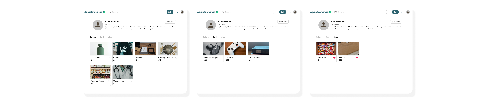
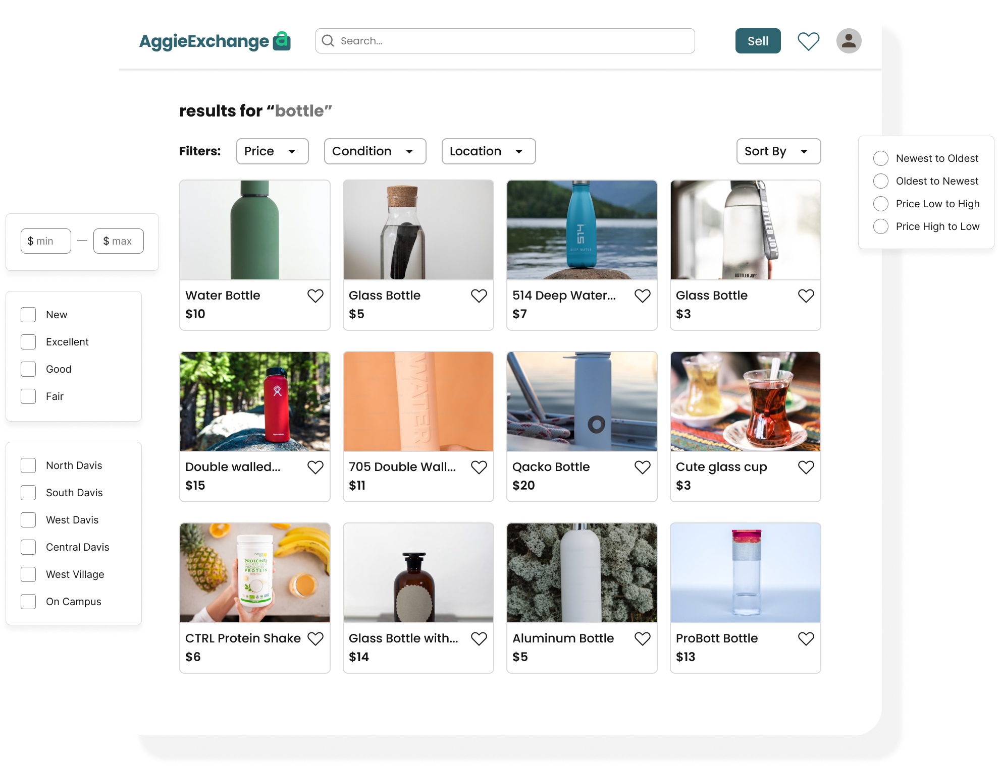

UC Davis is recognized as the most 'green' college campus in the United States, driven by the student body’s commitment to sustainability through initiatives such as running community gardens, eliminating waste throughout campus, and engaging with second-hand markets. Students have used popular e-commerce platforms like Facebook and Depop for their shopping activities, but encountered challenges ensuring quality, security, affordability, and item specificity. I researched and designed AggieExchange, the first online marketplace platform made exclusively for the UC Davis community (35,000+ students), to help improve the second-hand transaction experience for users.
Product Designer
Product Manager, Technical Product Manager, Developers, Product Designers
10 months
We successfully launched the MVP AggieExchange* website in Fall 2023, consistently increasing user engagement by 12% monthly! We also discovered a new user base—small business owners—which led to the creation of AggieMade, a sub-category for handmade goods that was launched in Winter 2024. This product also helped our parent organization, AggieWorks, win the Building Career Pathways Award from the UC Davis Center for Student Involvement 🎉!
* 🚧 The site is currently under construction 🚧
Despite the vibrant resale activity in Davis, students encounter difficulties in ensuring the validity of their transactions for buying and selling goods.
To better understand the problem space, we conducted surveys, interviews, and a focus group to gain a comprehensive understanding of the vast, current resale landscape.
Key Takeaways
From here, I drew a user flow of how users currently conduct activities on marketplace platforms. Instead of replicating existing processes, we identified opportunities to streamline the transaction process while still ensuring security.
While many students enjoy browsing Facebook Marketplace, they often feel unsafe traveling long distances to meet strangers for potentially low-quality items (especially in a college town where most people’s #1 mode of transportation is a bike 🚲!)
Initially, we aimed for a launch in Spring 2023, so that students could sell items before moving out, and consequently we iterated quickly, going through 4 rounds of iteration in the span of 1 month. We began with sketching our features to allow for quick prototyping, then moved to figma:
(I love using Apple’s Freeform as well as Procreate!)
To ensure we were in alignment with all roles involved, we had regular feedback sessions with (1) our Product Managers (2) our developers to ensure features were feasible, and (3) one second-hand shopper/seller for an “expert” user perspective.
Most popular marketplace platforms like Depop, Poshmark, and eBay offer in-app transactions to streamline the user experience and reduce additional steps. Our team made the decision to avoid conducting in-platform transactions in our MVP to prevent liability concerns, implementation challenges, and potential reliability issues. This presented a challenge, as it could undermine our reputation as a "secure" platform and turn users away.
→ To remedy this, I proposed we have a transaction model similar to Facebook Marketplace in which purchase details (payment, delivery, etc.) take place in conversation between the buyer and seller.
After completing several design iterations, we set up testing sessions with 10 users to ensure that the designs would meet their needs. We had users run through the main tasks of our app and to share their feedback. They identified two main areas that needed improvement:
01 - Cluttered Profile
When navigating the profile, users felt overwhelmed, stating that there were too many tabs with similar functions.
We streamlined our initial 5 profile page tabs into 3, aiming to reduce cognitive load and enhance usability. We also increased the size of multiple elements to improve readbility.
02 - Greater Assurance of Security
Users expressed a lingering sense of insecurity when interacting with other users and listings.
I suggested we implement "report user" and "report listing" buttons, as well as a User Status feature on profiles so users could verify the activity status of other users.
Creating the branding for AggieExchange was my favorite part of this project: UC Davis is a vibrant, organic, and fun community, so we aimed to incorporate playful elements that resonate with its values.
UC Davis’s official mascot is an Aggie, an agricultural horse, but by popular vote, the student body would say it is a Cow. Using Adobe Illustrator, I crafted a cow mascot for our site for graphics on the platform and in marketing campaigns.
We launched our first iteration of the product in October 2023. Below are key pages and features of the MVP website.
Users are welcomed by the AggieExchange cow and can explore the 4 categories: home, school, clothing, and miscellaneous, or view all listings on the page. I aimed to appeal to users with our memorable branding.
The profile page functions as a storefront for users, enabling them to effortlessly manage their listings. Additionally, users can access their liked items and make profile edits.
We built a form for sellers to fill out to streamline the selling process. Users can select from a variety of pickup options and tags, enhancing their chances of making successful sales.
Users are able to search for items from anywhere in the site. They can refine their search further by applying filters and sorting, creating a tailored and efficient search experience.
